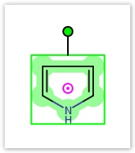
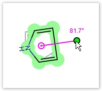
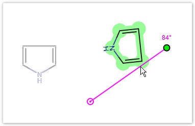
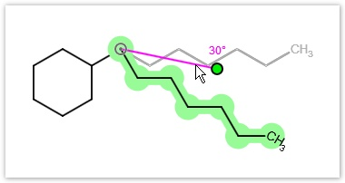
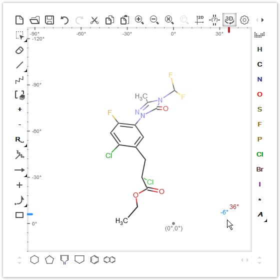
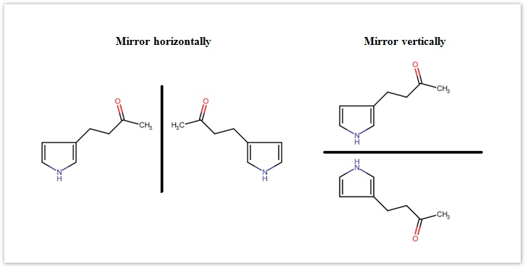

Marvin JS User's Guide
Table of Contents (Start)
Transformations
Dragging structures
After selecting them, whole molecules or fragments (parts of molecules) can be moved on the canvas. When you hover the cursor over the selected structure, the cursor "move" cursor will appear indicating that the highlighted part can be dragged on the canvas. If you select a whole molecule, it will be translated without any modifications, but when the selection contains only a fragment, the molecule will be distorted due to the changes in bond lengths and bond angles. Note that the positions of the atoms within the selected fragment are fixed, so only the bonds between the selected and non-selected part of the molecule will be distorted.
Rotating in 2D
When a structure was been selected, it can be rotated around its center in two dimensions.

The pink circle with a dot is the center of the selected area (pivot point). The molecule can be rotated around this point by clicking on the green dot and dragging the cursor on the canvas. During dragging, you can see the angle of rotation near this green dot. By default, rotation is done in 6° increments. For continuous rotation hold the "Shift" button while rotating.

When a whole molecule is selected, the original center of rotation can be relocated by dragging. In this case, if the new rotation center is too close to its original position, it will be snapped back to it. However, pressing the "Shift" key while dragging the center of rotation allows it to be as close to its original place as you wish. Moving the center lets you rotate the molecule around any point of the canvas. The image of the starting structure remains displayed in grey during rotation.

When a selected part is only a fragment which connects to the rest of the molecule with one bond only, you cannot move the pivot point (which is gray in this case). In such cases the rotation center will be that atom of the selected fragment which connects to the non-selected part of the structure.

Rotating in 3D
Structures on the canvas can be rotated in three dimensions. Please note that during 3D rotation, every molecule you have on the canvas will be rotated and their coordinates will change accordingly.
Select the 3D rotate button on the Tools toolbar. Clicking on the canvas results that the molecule starts rotating automatically in 3D on the canvas. You can stop the rotating by clicking on the canvas again.
If you want to rotate the molecules in 3D manually, drag the cursor over the canvas. While rotating, you can see the current angle of rotation around the vertical (y-) and horizontal (x-) axis next to the cursor, as well as on the two axis at the edges of the canvas.

If you hold down the "Shift" key while rotating, you can rotate the structure around the vertical or horizontal axis only, depending on the main direction of dragging (i.e., if you move the cursor from left to right, the structure will be rotated around the y-axis, while if you drag the cursor up and down, the molecules will be rotated around the x-axis).
Mirroring structures
Molecules or fragments can be mirrored either horizontally or vertically using the Mirror Horizontally or Mirror Vertically options in the pop-up menu. For mirroring, you should select the molecule or fragment concerned, right-click inside the selected area, and select the appropriate menu option. Mirroring is possible only for whole, unattached molecules or for fragments which connect with no more than one bond to the unselected part of the structure. In any other case, the mirror options remain inactive.

Finally, it has to be mentioned that the rules of undoing/redoing are the same for every kind of transformation: an event begins with pressing down the mouse button and ends with releasing it. The whole action between these two points can be undone or set back in one step.